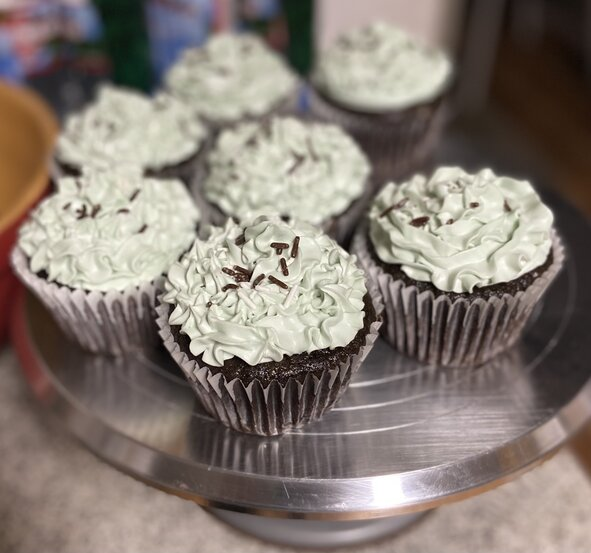
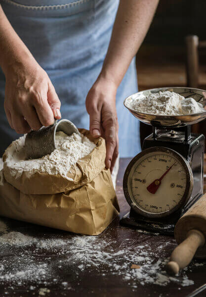
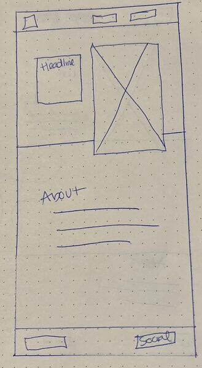
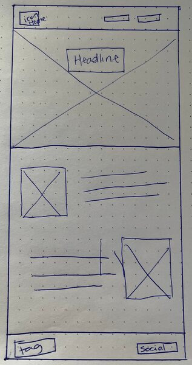

Content
Lesha's Cakes and Bakes
We are so excited that you found our site! Lesha's Cakes and Bakes is a family run adventure that has been in the works for a few years now. I am a mom to 5 wonderful boys and they have such a fun "entrepreneur" mindset. Right along with my husband, the kids are always encouraging me to sell my desserts. Here you will find creations in our kitchen, possible purchase opportunities, and tricks to help you find success in your own kitchen! We will share our fails too, no worries! Are you Gluten Free? Sugar Free? We have some recipes for you as well. Come bake with us!
Images for the Home page


Sweets and Treats
One thing that brings me joy, is making treats to give away. A recent tradition that we have been doing since making ‘fancy’ cakes, is to let the birthday person decide who to share their cake with. We then bring a good portion of the cake to them, hoping to brighten their day. With sharing, comes the need to learn other baking styles, Gluten Free, sugar free, dairy free... we have had some successes (and fails) with all of those, along with many successes with ALL. THE. SUGAR! I also am not a fan of artificial dyes, which makes it tricky to add colors to my desserts. This week, we will be featuring Cupcakes. The OREO cupcake, A Dairy Free/Dye Free Chocolate Cupcake, and a German Chocolate Cupcake.
Images for the Page 2

Dirty up the Kitchen with Us
I tend to not be a perfect baker; I eyeball measurements a lot because I am just trying to cut corners to get the job done quicker. This can be a big no-no in the baking world! We are here to help you find more enjoyment in your kitchen. My boys often pull a chair up to the counter to help me out and it really does bring so much JOY (and mess) to the kitchen. We want you to find ways that work for you and teach you a thing or two along the way. One of my first recommendations is definitely to go out and get yourself a simple kitchen scale. It really does make measuring ingredients so much simpler so that you can get to eating your delicious creation quicker. Thank you for joining us on this adventure!
Images for the Page 3

Wireframes
Create three wireframes for your site. One for each page and list them here
Home
This page will be very miniamlistic. Just a brief introduction to what people will find when looking around the site.
Sweets and Treats
Page 2 will showcase the desserts of choice we want to talk about for the week. Recipes might be included. Also, if there is an upcoming bake sale, that will be posted here on this page. Hoping to make the image under the headline stay put and having the headline merge with the header, if I can figure that out.

Dirty up the Kitchen with Us.
Page 3 will show tips and tricks plus favorite kitchen gadgets. This page will be more word heavy.
